Návrh 1
Pan Spočítal klasik
Kulaťoučký pán v buřince, brýle, motýlek a kalkulačka v ruce.
Návrhy maskota pro novou finanční značku. Všechno spočítá, vysvětlí po lidsku a řekne, co se vyplatí.
Každý má své písmeno. Vyber TOP 5 a pro ně uděláme pozice: vítá, děkuje a ozveme se, je smutný, že odcházíš…
Lidský rádce v buřince se „=“ a kalkulačkou.
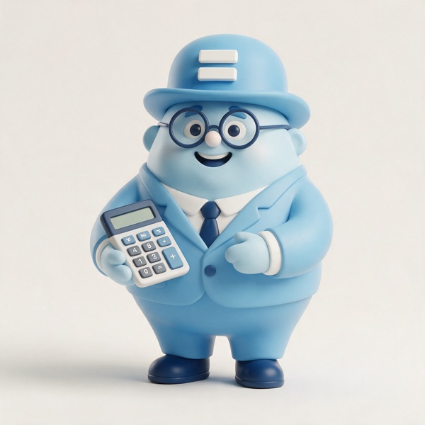
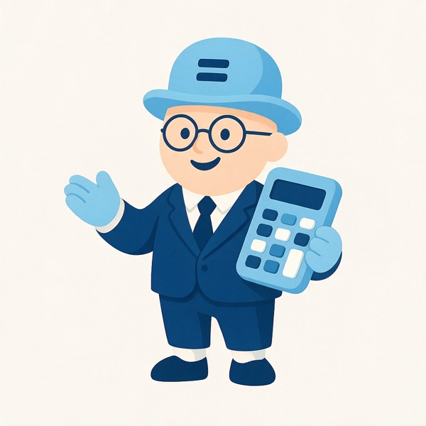
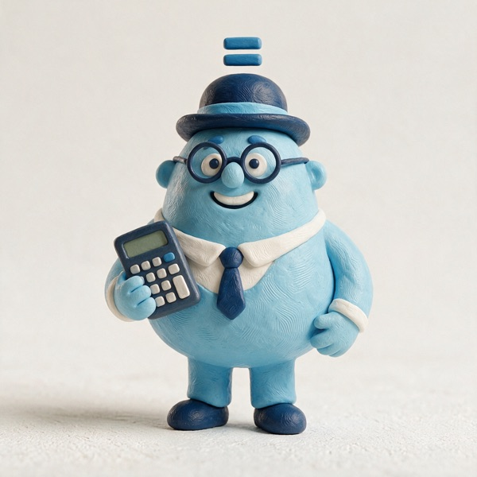
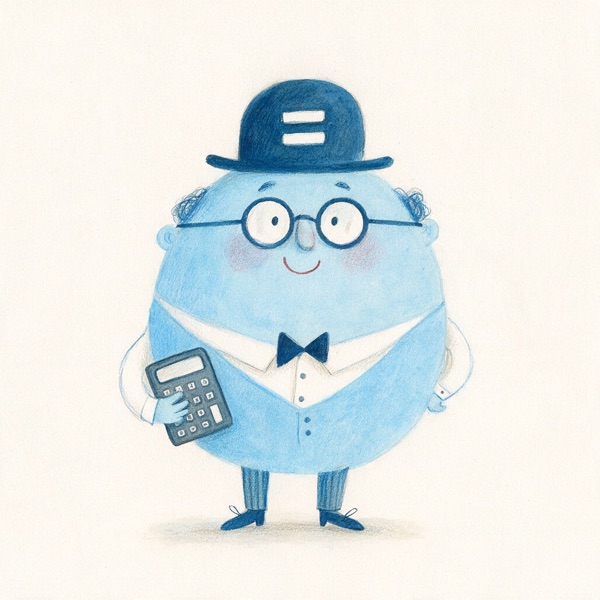
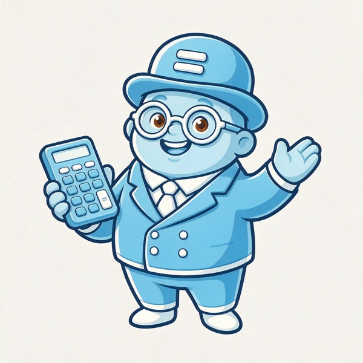
Staví domov a šetří, přímý odkaz na bydlení.
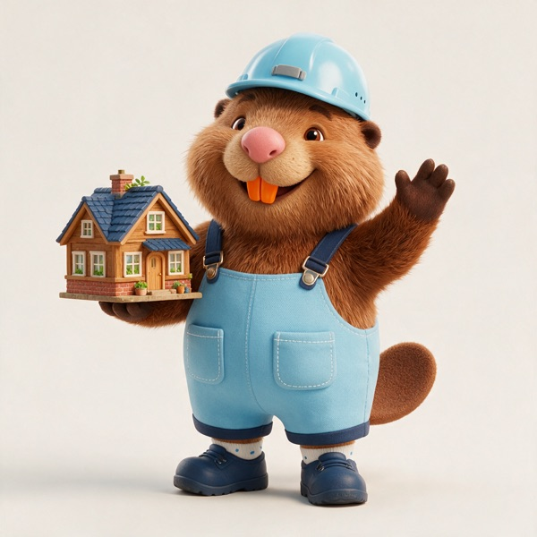
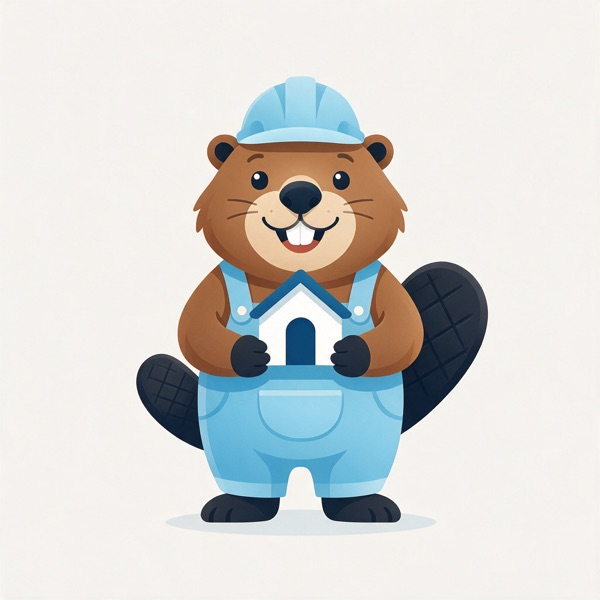
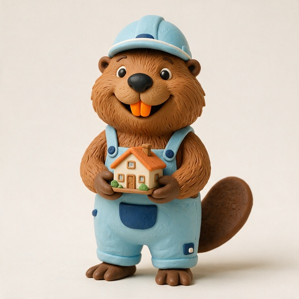
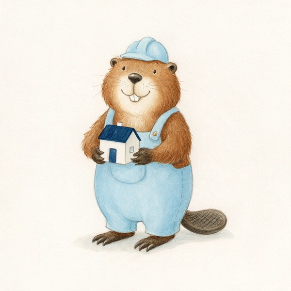
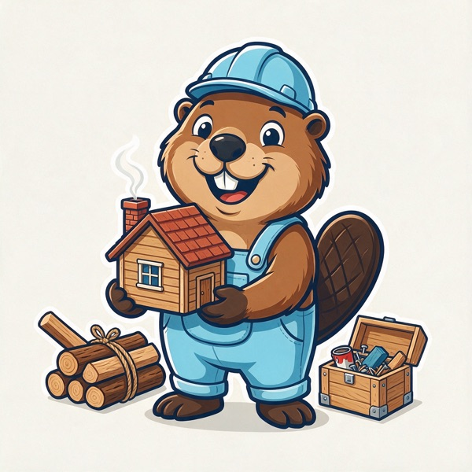
Živý domek s klíčem, okamžitě říká „bydlení“.
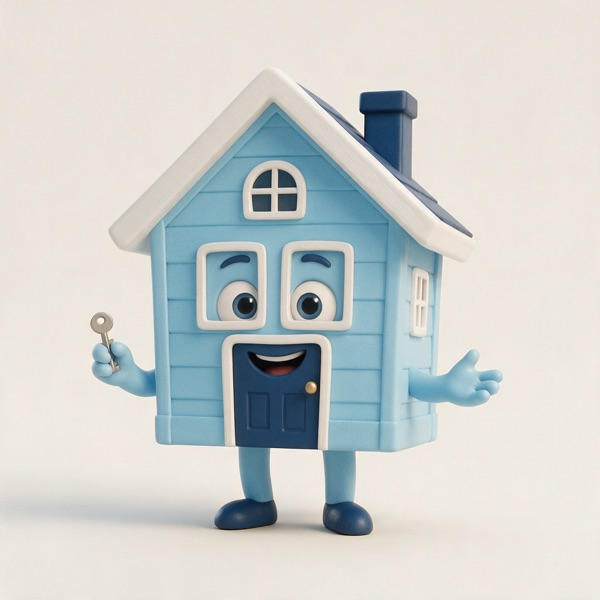
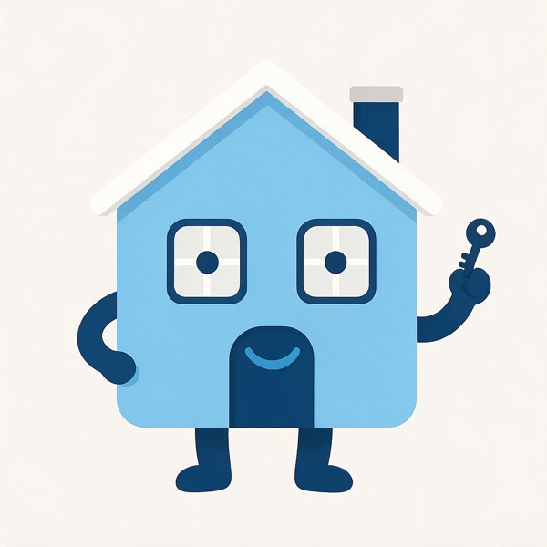
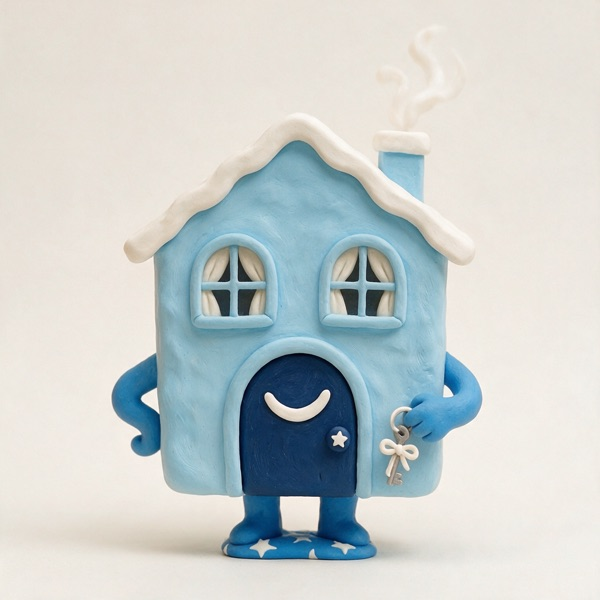
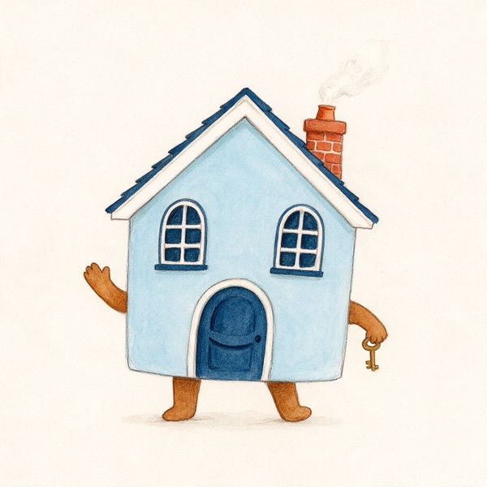
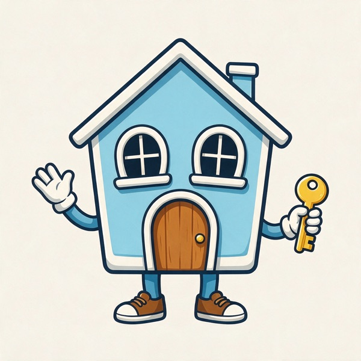
Pokladnička, spoření. Srozumitelné, ale okoukané.
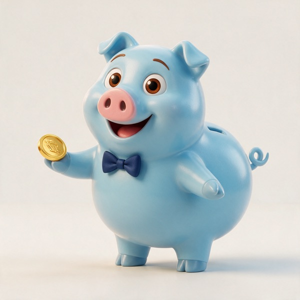
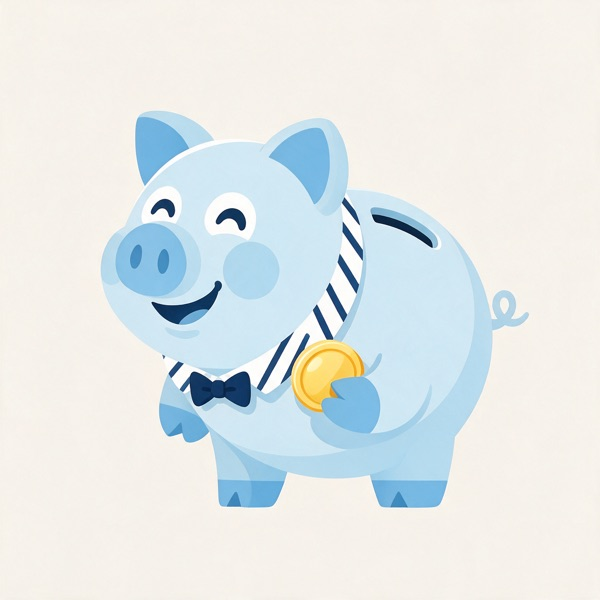
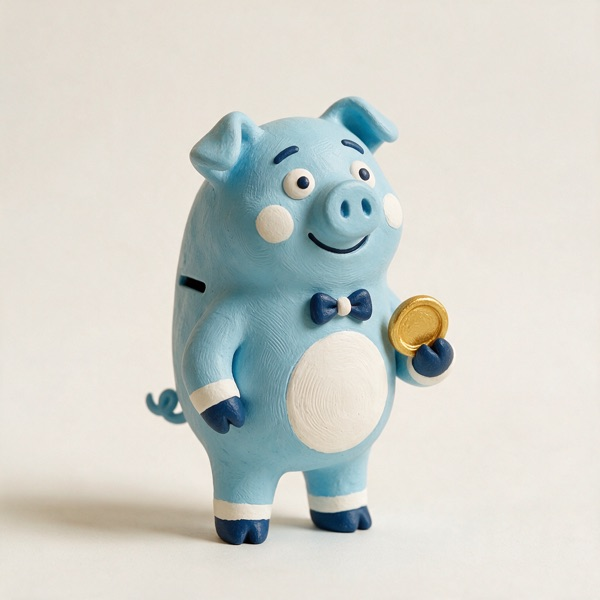
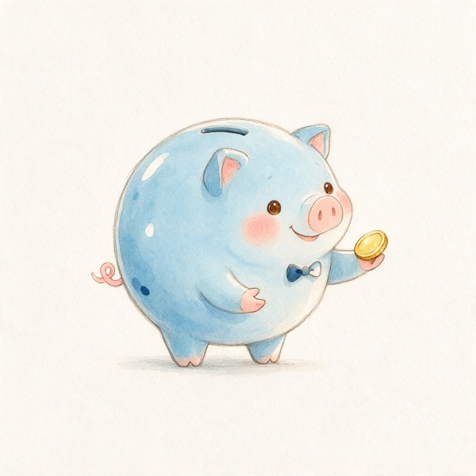
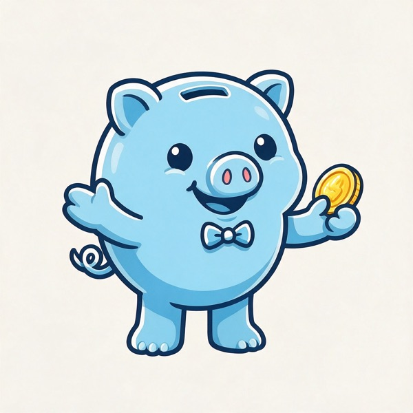
Fintech asistent s grafem, rychlost a technologie.
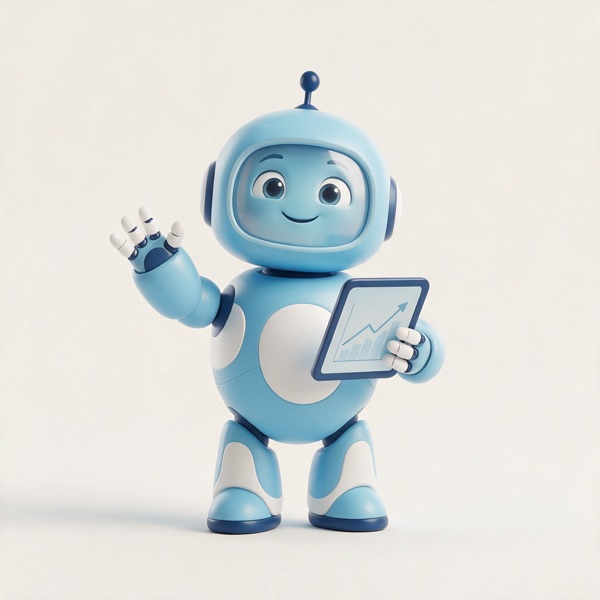
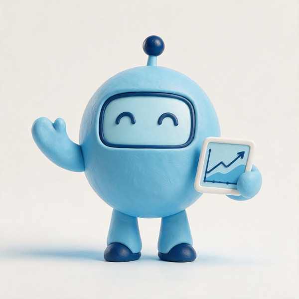
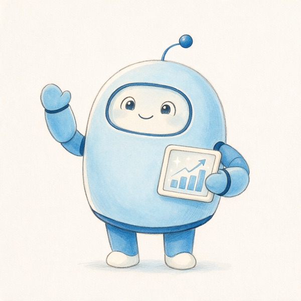
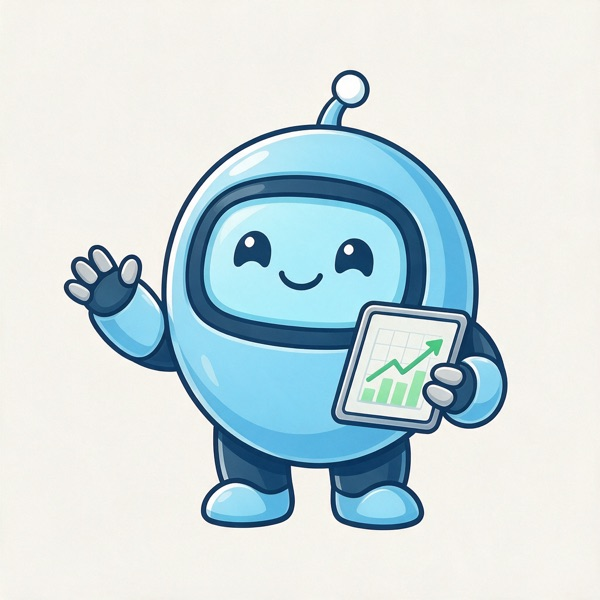
Šest směrů, všechny v klobouku se znaménkem „=“.
Kulaťoučký pán v buřince, brýle, motýlek a kalkulačka v ruce.

Stejná postava, víc energie a radosti, že to vyšlo.

Tělo z korálků počítadla, knírek, tužka a zápisník s čísly.

Sama kalkulačka ožila, na displeji „=“, mává na pozdrav.

Sova jako symbol rozvahy, drží minci se znaménkem „=“.

Pokladnička v buřince, v ruce desky s odškrtnutým úkolem.
Maskoti z ostatních pracovních názvů, kdyby se hodila jiná nálada.

Hotovo, schváleno, palce nahoru.

Jiné pojetí stejného nápadu.

Rostoucí čísla, šplhá po grafu.

Jiné pojetí stejného nápadu.
Hypotéky, úvěry, pojištění a spoření. Pan Spočítal to přepočítá za vás.